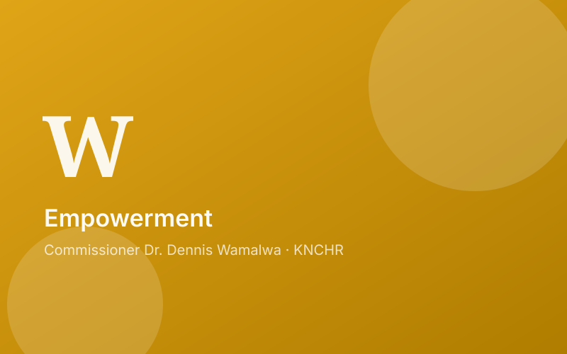

Empowering Kenya National Commission on Human Rights Staff: A Training and Exchange Programme Initiative

Introduction: Investing in Our Human Resource
The Kenya National Commission on Human Rights (KNCHR) understands the importance of investing in its human resource. In this regard, a staff training and exchange programme was held on 21st March 2023 at Swiss Lenana Mount Hotel, with participants including the CEO, Dr. Mogesa, external facilitators from Kenya School of Government (KSG), and 25 KNCHR staff from various divisions, departments, and directorates.
Aligning Staff Training with Performance Evaluation
To ensure the training programme addresses the needs of the staff, KNCHR integrates training needs identification with its annual performance evaluation process. Staff members fill in appraisal forms, administered by the HR division, which include a section for suggesting training needs. Based on these suggestions, the HR and PET teams compile common topics for training, such as grant management, corporate communication, and organizational culture management.
Tailoring Training to Unique Requirements
While the common training topics cater to the general needs of the staff, KNCHR recognizes that individual divisions, departments, and directorates may have unique training requests. Despite limited resources, the Commission, through its HR division, strives to address these specific training needs.
The Importance of Continuous Employee Training
Employee training is essential for maintaining an effective and efficient workforce. By providing employees with the necessary skills, knowledge, and positive attitude, organizations can ensure maximum output at work. As the work environment continues to evolve, regular training becomes even more crucial to keep employees up to date with the latest demands.
Reaping the Benefits of Empowered Staff
The staff training and exchange programme promises to significantly enhance the capacity of KNCHR's workforce. When employees are equipped with the right skills and knowledge, the ultimate beneficiaries are the citizens, whose rights will be better promoted and protected. The chair and commissioners of KNCHR remain committed to supporting any initiative that improves the welfare of the staff.
In Conclusion: Haki Kwa Wote Kila Wakati
By investing in the continuous training and development of its staff, KNCHR aims to better serve and protect the rights of the Kenyan people. The success of this training and exchange programme serves as a testament to the organization's commitment to human rights for all, at all times.
Regards,
Dr. Dennis Wamalwa, Commissioner,
Kenya National Commission on Human Rights